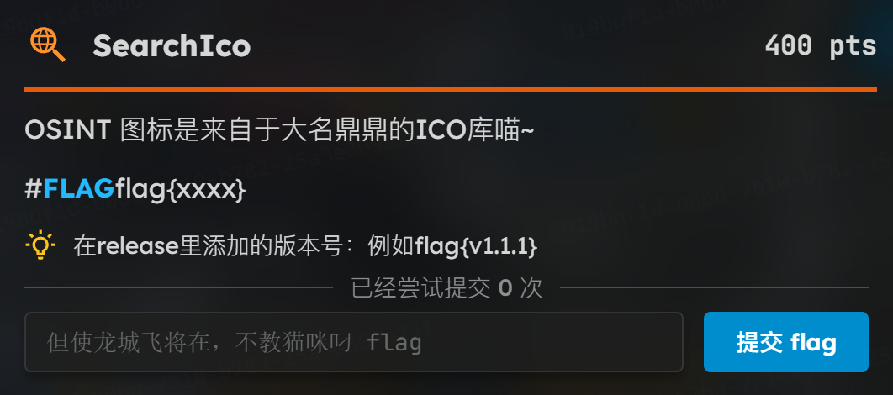
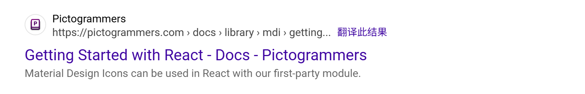
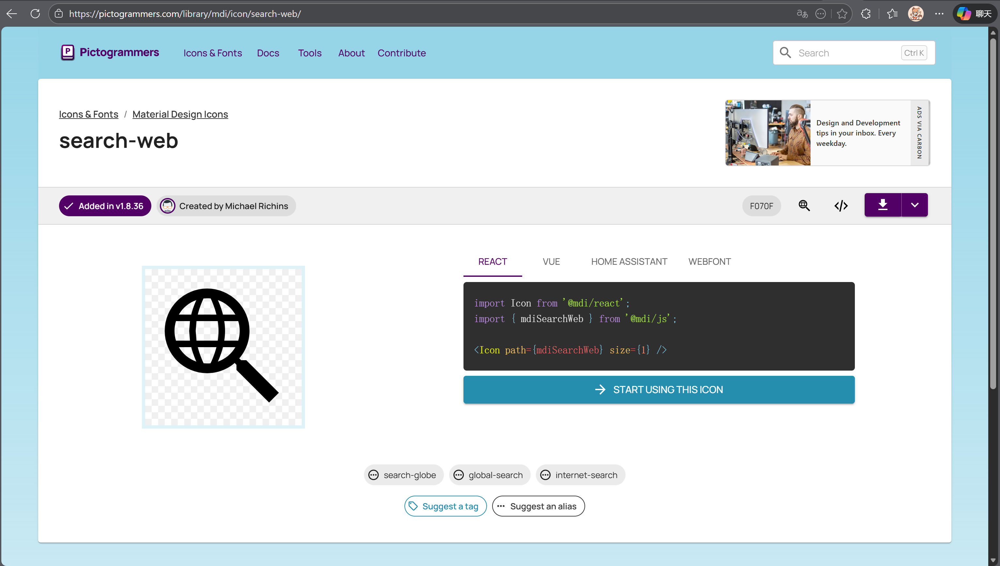

开源情报获取 OSINT¶
简介¶
「开源网络情报 Open source intelligence,OSINT」 ，是一种情报搜集手段，从各种公开的信息资源中寻找和获取有价值的情报。
在国内，大家也喜欢称这类题目为 "社工题" ，这类题目通常以 各类标志性建筑，街景，行程信息等内容的 图片 作为题目，选手需要从有限信息中不断检索修补信息差，寻找细节突破点，依次来获得题目要求的信息 —— 拍摄地点，拍摄人的一些身份信息等。
OSINT 题目是比较吃经验和技巧的
图片定位¶
对于仅给定图片的 OSINT 题目，通常从图片本身和图片内容入手。
图片文件信息¶
一些图片的EXIF信息中可能含有拍摄的时间，经纬度，角度，设备型号等信息，通过图片 经纬度 + 图片内容 进行误差修正的 OSINT 题目也算是简单题目中的常客。
但是注意，EXIF信息是可以被篡改的，小心被误导哦~
街景¶
街景的维度很广，笔者在此尽量列举，但不能保证完全包含：
-
建筑风格 门户朝向
-
道路风格 道路标识
-
从是否有地标性或者其他标志性建筑/图案
-
显眼的店铺名称
-
各种路牌 指示牌 站台牌
-
围栏特征 路灯特征 装饰特征
-
车牌
-
行人服饰特点
-
光线方向 采光 反光
-
植被覆盖率 植被种类 特殊土质分布
-
其他图片中出现的有意义文字
-
全景地图辅助 / AI信息检索
......
交通要地¶
如 火车站，地铁站，机场，码头等。
- 布局
- 各类提示性文字 指示牌
- 交题工具是否出镜 —— 外形 具体型号
行程信息¶
如 各类车票 / 机票 ，已对部分要素打码，但依旧能获取到其他如 时间，机票标识等有效要素的图片。
这里可以通过查询日出日落时间，根据天气情况修复被遮挡的时间或排除可能的干扰项。
特别的，如果图片中出现了护照/签证，说明目标城市可能需要相关证件。
信息检索¶
除了街景之外，OSINT还有一些相对少见的题目类型。
图标搜索¶
以这个题目为例：

题目要求搜索GZCTF框架中，Osint方向的ICON图标（就那个放大镜一样的东西）。不妨去github上看看对应的源码，然后发现：好像存储库里面没有图标文件啊？
再仔细翻翻，我们发现好像GZCTF使用的是React，在这个文件中我们可以注意到：
import {
Alert,
Anchor,
BackgroundImage,
Badge,
Button,
Center,
Container,
Group,
Stack,
Text,
Title,
useMantineTheme,
} from '@mantine/core'
import { useScrollIntoView } from '@mantine/hooks'
import { useModals } from '@mantine/modals'
import { showNotification } from '@mantine/notifications'
import { mdiAlertCircle, mdiCheck, mdiFlagOutline, mdiTimerSand } from '@mdi/js'
import { Icon } from '@mdi/react'
import { FC, useEffect, useState } from 'react'
import { Trans, useTranslation } from 'react-i18next'
import { Link, useNavigate, useParams } from 'react-router'
import { GameJoinModal } from '@Components/GameJoinModal'
import { GameProgress } from '@Components/GameProgress'
import { Markdown } from '@Components/MarkdownRenderer'
import { WithNavBar } from '@Components/WithNavbar'
import { useLanguage } from '@Utils/I18n'
import { showErrorMsg } from '@Utils/Shared'
import { useIsMobile } from '@Utils/ThemeOverride'
import { getGameStatus, useGame } from '@Hooks/useGame'
import { usePageTitle } from '@Hooks/usePageTitle'
import { useTeams, useUser } from '@Hooks/useUser'
import api, { GameJoinModel, ParticipationStatus } from '@Api'
import classes from '@Styles/Banner.module.css'
@mdi/react的Icon。
于是在网上我们可以找到这么一个工具：

大概猜测一下图标名称，最后搜索search的时候有了收获：

所以最终的flag为：
工具¶
图片搜索¶
| 网站名称与网址 | 描述 |
|---|---|
| 谷歌识图 | 优秀的图片搜索引擎，以搜索效果著称。手机用户可点击浏览器菜单→开启“浏览电脑版网页”以访问上传图片功能。 |
| 百度识图 | 适合中文网站图片资源搜索的工具。 |
| 搜狗识图 | 提供人性化的图片识别功能，包括「通用识图」「猫狗识别」「明星识别」「找高清大图」等选项，根据需求选择提高识别效率。 |
| Yandex.Images | 俄罗斯最受欢迎的搜索引擎，支持英文搜索。在其他搜索引擎无法找到结果时，不妨尝试使用Yandex以获取更好的搜索效果。 |
| TinEye | 老牌图片逆向搜索引擎，资源丰富。安装浏览器插件后可通过右键菜单直接使用。 |
| 必应可视化搜索 | 由微软必应推出的视觉搜索引擎，支持特色搜索如植物、商品、家具、宠物、文字、人物、建筑等。 |
| What Anime Is This? | 动漫视频截图识别工具，专为动漫迷设计。可通过视频截图找到动画图片的来源和片段位置。 |
| SauceNAO Image Search | 知名的图片逆向搜索引擎，对动画、漫画、插画、二次元等领域有出色的识图效果。可获取图片来源和作者主页链接。包含数十亿张图像，尤其在Pixiv（pixiv.net）的识别效果出色。 |
定位辅助¶
| 网址 | 描述 |
|---|---|
| Google Geolocation | 谷歌地理定位 |
| 移动OneNET平台 | 智能硬件位置定位 |
| OpenGPS | 高精度定位 |
| CellLocation | 经纬度、WiFi mac地址、BSSID、gps |
| Seeker | 获取高精度地理信息和设备信息的工具 |
| MAC地址查询工具 | MAC地址库查询工具 |
| MaxMind GeoIP | geoip2全球IPV4 |
| IPIP | IPV4，可查IP归属数据中心。 |
| IPPlus360 | IPV4/IPV6地址库。 |
| OpenCellID | GSM定位 |
| SunCalc | 通过太阳和投射的阴影进行人员地理位置定位 |
社交媒体¶
| 网站名称与网址 | 描述 |
|---|---|
| lyzem.com | Telegram搜索引擎。 |
| Social Mapper | 由Trustwave公司SpiderLabs开源的社交媒体枚举和关联工具，通过人脸识别关联人物侧写。 |
| Sniff-Paste | 针对Pastebin的开源情报收集工具。 |
| Linkedin2Username | 通过Linkedin领英获取相关公司员工列表的工具。 |
| Mailget | 通过脉脉用户猜测企业邮箱的工具。 |
| Picdeer | Instagram内容和用户在线搜索工具。 |
| Ransombile | 用于根据社交媒体密码找回信息的Ruby工具。 |
| Reg007 | 查找注册过的网站和应用的工具。 |
| Check Your Weibo | 微博互关检测脚本的工具。 |
交题运输¶
| 网站名称与网址 | 描述 |
|---|---|
| Flightradar24 | 提供全球实时飞行跟踪信息。 |
| Flight ADSB | 提供一年内航班轨迹信息。 |
| Variflight Map | 提供一年内航班轨迹筛选。 |
| MarineTraffic | 提供全球船舶跟踪情报。 |
小结¶
CTF中的 OSINT考察 是比较狭义的，虽然多以街景分析定位为主，但里面依旧融合了不少知识。作为比赛题目，重在考察选手的信息收集和整理能力，这也是作为计算机和网络安全领域必不可少的技能。
在现实中，情况往往比题目更加复杂，OSINT 涉及到的信息维度和信息量会远远超出预期，希望读者能够在题目中提升，而不是一味的沉沦。